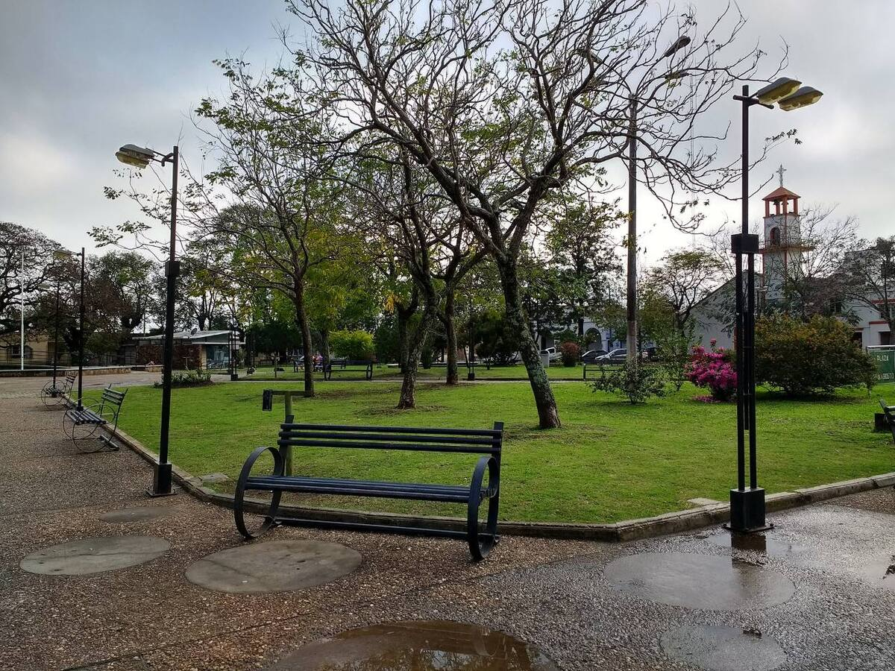
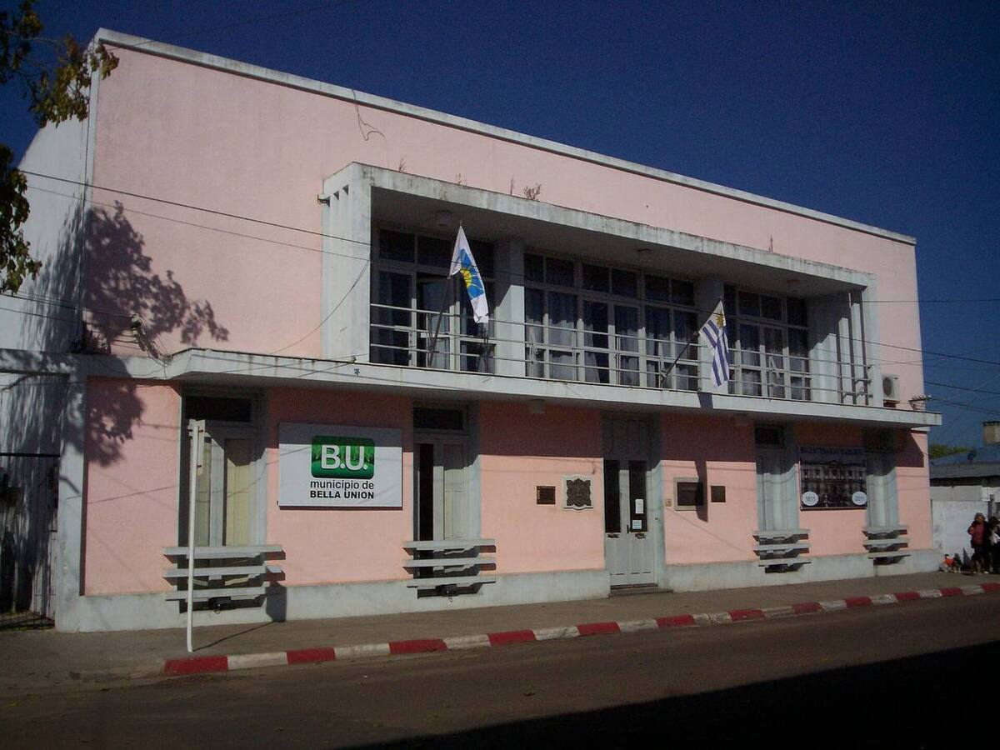

La puerta al río
Se inauguró en octubre de 2019 en el recinto portuario de Bella Unión. La obra costó unos 400.000 dólares y la financiaron el Ministerio de Turismo, con fondos del BID, y el Ministerio de Transporte, con apoyo de la Intendencia y del Municipio.
La gestionan en conjunto la Dirección Nacional de Hidrografía, el Municipio de Bella Unión, el Club Náutico y el comité del área protegida Rincón de Franquía. Tiene información turística del Corredor de los Pájaros Pintados, baños y una sala de usos múltiples.
Paseos que salen desde acá
- Recorridas en lancha por la triple frontera entre Uruguay, Argentina y Brasil.
- Navegación entre las islas del río, con vista a la Isla Brasilera.
- Paseos a la Isla Zapallo y al Arenal del Tigre, un sitio con valor arqueológico, con baqueanos de la zona y almuerzo criollo.
- Salidas de pesca.
Bella Unión
Fundada en 1829 por Fructuoso Rivera, es la única ciudad uruguaya que limita a la vez con Argentina y con Brasil. Su economía gira en torno a la caña de azúcar, y su carnaval dura cinco noches, con comparsas que desfilan al ritmo de samba pero cantan en español.
Fotos

Foto: Mx. Granger · CC0

Foto: Ulises Icardi · CC BY-SA 4.0